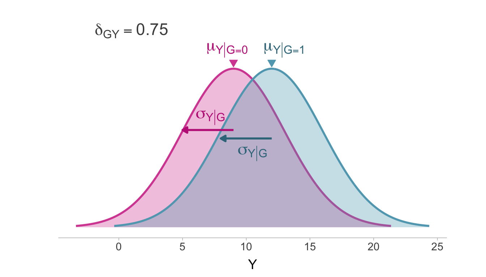
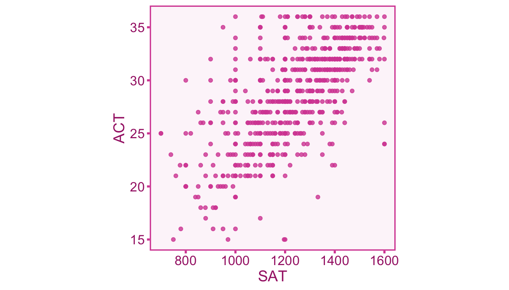
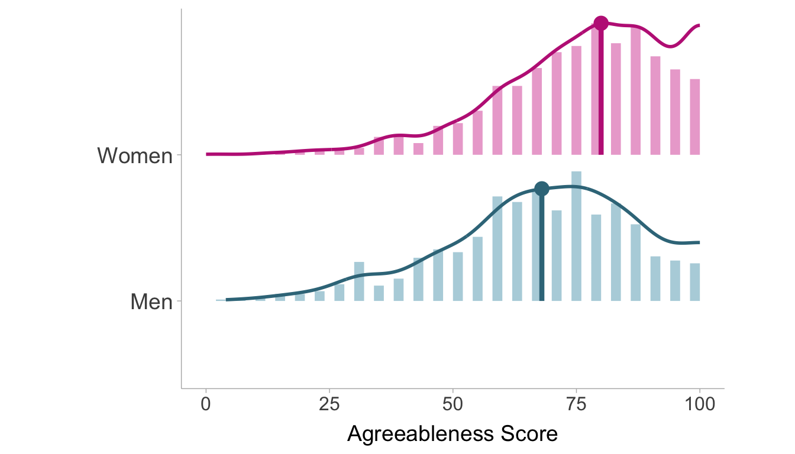
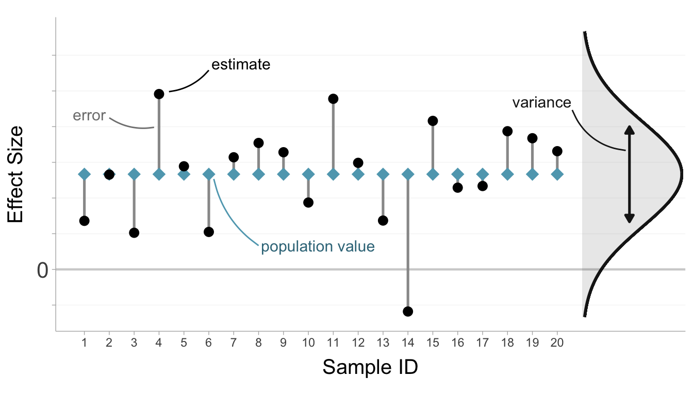
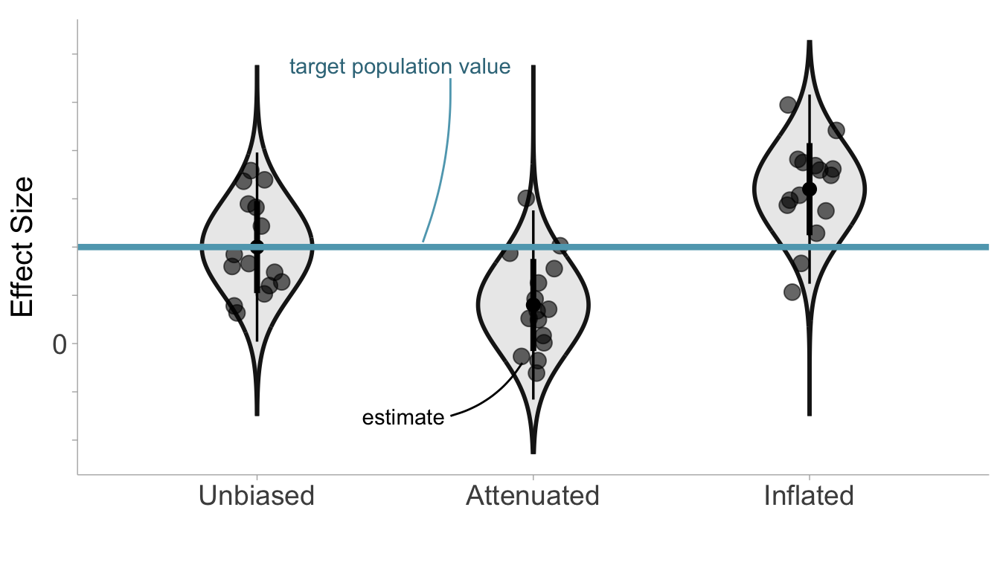
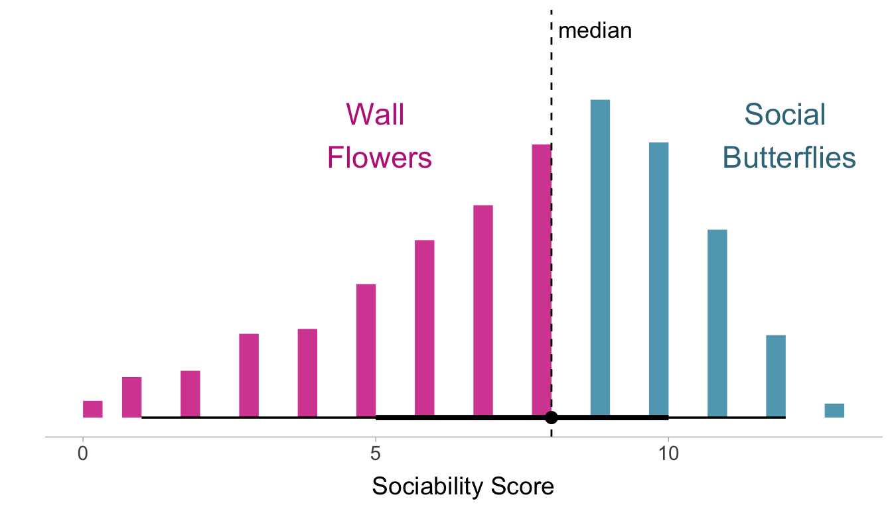
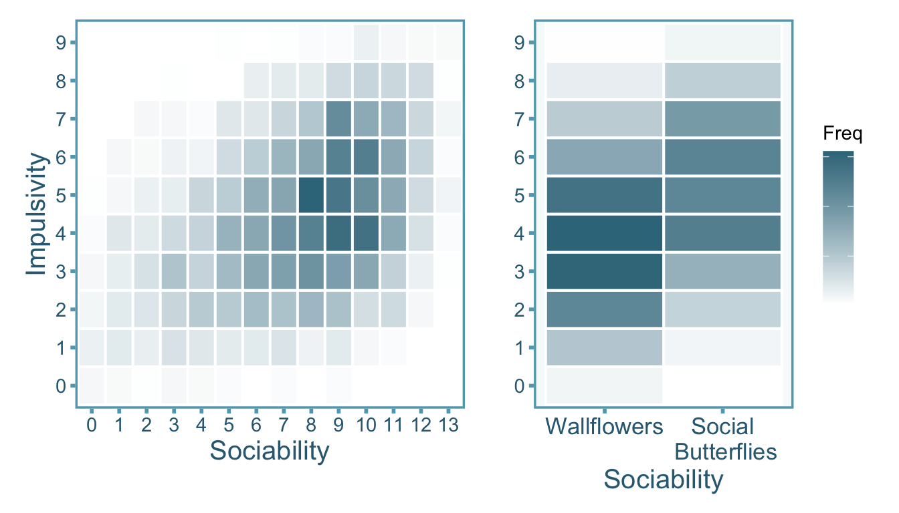

4 Effect Sizes and Artifacts
4.1 Effect Sizes
An effect size is a parameter that describes the degree of association of two random variables1 (e.g., \(X\) and \(Y\)). Effect sizes are often used to quantitatively summarize research findings. We can define two types of effect sizes that will be of primary focus throughout the book: correlations and standardized mean differences (SMDs). Both correlations and SMDs are standardized effect sizes which means that they are without respect to location and scale of random variables. Standardized effect sizes allow for comparability across studies, in particular, they facilitate research syntheses and meta-analyses.
4.2 Correlations
A correlation is defined as the standardized covariance between two variables (see Figure 4.1). For two continuous random variables, \(X\) and \(Y\), the correlation \(\rho_{XY}\) can be expressed as,
\[ \rho_{XY} := \frac{\sigma_{XY}}{\sigma_X\sigma_Y}. \tag{4.1}\]
Where \(\sigma_{XY}\) is the covariance between \(X\) and \(Y\), \(\sigma_X\) and \(\sigma_Y\) are the standard deviations of \(X\) and \(Y\), respectively. A correlation does not have to be between two continuous variables. Typically, a correlation between a Bernoulli random variable and a continuous random variable is referred to as a point-biserial correlation and it is expressed similarly to Equation 4.1,
\[ \rho_{GY} := \frac{\sigma_{GY}}{\sigma_G\sigma_Y}. \tag{4.2}\]
A correlation (whether point-biserial or continuous) is bounded between -1 and 1, where -1 is a perfectly negative correlation, 1 is a perfectly positive correlation, and 0 indicates no correlation. Note that a correlation of zero does not necessarily mean that the two variables are independent.
4.3 Standardized Mean Difference
The relationship between a Bernoulli random variable and a continuous random variable can alternatively be expressed as a standardized mean difference. A standardized mean difference is the difference between the means of two groups standardized by the within-group standard deviation (see Figure 4.2). The groups are defined by the values of a Bernoulli random variable and the standardized mean difference,
\[ \delta_{GY} := \frac{\mu_{Y|G=1}-\mu_{Y|G=0}}{\sigma_{Y|G}}, \tag{4.3}\]
where \(\mu_{Y|G=0}\) and \(\mu_{Y|G=1}\) is the population mean of \(Y\) for group 0 and 1, respectively. The within-group standard deviation \(\sigma_{Y|G}\) is assumed to be equal between groups such that, \(\sigma_{Y|G}=\sigma_{Y|G=1}=\sigma_{Y|G=0}\).

4.3.1 Sample Estimates of Effect Sizes
The effect size in the population of interest is a fixed value that does not change from sample to sample. However, an estimate of the effect size from sample data will vary from sample to sample. We will denote sample estimates of effect sizes with English letters as opposed to the Greek letters we used for population effect sizes.
Correlations
The sample estimate of a correlation is computed as follows (Pearson 1895),
\[ r_{XY} := \frac{s_{XY}}{s_{X}s_{Y}} \tag{4.4}\]
Where \(s_X\) and \(s_Y\) are the sample standard deviations and \(s_{XY}\) is the covariance. See Example 11.1 for an example of a correlation between standardized test scores.
Example 4.1 (Relationship between Test Scores) In the United States, universities frequently require prospective students to take one of two standardized tests assessing academic ability, the Scholastic Achievement Test (SAT) and the American College Test (ACT). Since these tests are used interchangeably in university admission decisions, it is good to know how related the scores of these tests really are. A data set from Revelle, Wilt, and Rosenthal (2010) consists of 668 individuals who took both the SAT and the ACT. The data set splits the SAT test into Quantitative (SATQ) and Verbal (SATV) subtests which each range from 200-800, whereas the ACT is reported as a score from 1-36. We can plot out the relationship between the total SAT score (SATV + SATQ) and the ACT scores with a scatter plot2 (see Figure 4.3)

The resulting covariance matrix between variables is displayed in Table 4.1. The covariance matrix shows the covariance between all the variables in the model. Note that the covariance between a variable and itself is equal to the variance (e.g., \(\sigma_{XX}=\sigma^2_{X}\)). Therefore the diagonal (from top-left number to bottom-right number) of the matrix are the variances of each of the variable whereas the off-diagonal is are the covariances between pairs of variables.
| Test | ACT | SATQ | SATV | SAT |
|---|---|---|---|---|
| ACT | 21.68 | 299.49 | 276.13 | 575.61 |
| SATQ | 299.49 | 11179.27 | 6515.60 | 17694.86 |
| SATV | 276.13 | 6515.60 | 10699.90 | 17215.50 |
| SAT | 575.61 | 17694.86 | 17215.50 | 34910.36 |
The correlation coefficient between total SAT (the last column) and ACT (first column) can be computed using the formula in Equation 4.4. Let’s treat SAT as our \(X\) variable and the ACT as our \(Y\) variable:
\[ r_{XY} = \frac{s_{XY}}{s_X s_Y} = \frac{625.69}{\sqrt{40074.40} \times \sqrt{22.37}} = .66 \]
Standardized Mean Differences (SMDs)
For an SMD, the commonly used estimate for comparison between two independent groups is Cohen’s estimator (Cohen 1988),
\[ d_{GY} = \frac{m_{Y|G=1} - m_{Y|G=0}}{s_{Y|G}}. \]
This is commonly referred to as Cohen’s d or simply the d statistic. The sample estimate of the standard deviation of \(Y\) given \(G\) is the pooled within-group standard deviation,
\[ s_{Y|G} = \sqrt{\frac{(n_0 - 1)s^2_{Y|G=0} + (n_1 - 1)s^2_{Y|G=1}}{n_0 + n_1 -2}}. \]
The within-group sample size is denoted by \(n_0\) and \(n_1\) for \(G=0\) and \(G=1\), respectively. If there is reason to believe that the variances differ between groups, such that \(s_{Y|G=0}\neq s_{Y|G=1}\), then it may be best to standardize the mean difference with just one of the groups (usually a control/reference group).
Example 4.2 (Gender Differences in Agreeableness) In personality psychology, the Big 5 personality traits are five dimensions where preferences and attitudes tend to vary (Agreeableness, Openness, Conscientiousness, Extraversion, and Neuroticism). Agreeableness reflects a person’s cooperativeness, politeness, kindness, friendliness, and compassion. Agreeableness also tends to differ on average between men and women, with women generally scoring higher. Using a data set from Goldberg (1999) consisting of 2800 participants, we can calculate the standardized mean difference from 2709 individuals who answered all of the items pertaining to agreeableness. The data set consists of 896 men and 1813 women who all responded to five statements related to agreeableness (e.g., “Inquire about others’ well-being”). Each participant self assessed the accuracy (from 1-Very Inaccurate to 6-Very Accurate) of each of the five statements with respect to themselves. Agreeableness is scored based on the average of their responses to all of the statements and POMP scored so 0 is the minimum possible score (very disagreeable) and 100 is the maximum possible score (very agreeable). The distributions within men and women are displayed in Figure 4.4.

The descriptive statistics for both groups are presented in Table 4.2. We find the mean agreeableness score of women in the sample is 75.50, whereas the mean for men is 67.55. We also find the standard deviation to be 17.10 and 18.63 in women and men, respectively.
| Gender | n | mean | sd |
|---|---|---|---|
| Women | 1813 | 75.50 | 17.10 |
| Men | 896 | 67.55 | 18.63 |
The sample estimate of the SMD can be computed with the following procedure:
- Calculate the mean difference (denoting \(G=1\) as women and \(G=0\) as men):
\[ m_{Y|G=1} - m_{Y|G=0} = 75.50 - 67.55 = 7.95 \]
- Then we can calculate the pooled standard deviation:
\[\begin{align} s_{Y|G} &= \sqrt{\frac{(n_0 - 1)s^2_{Y|G=0} + (n_1 - 1)s^2_{Y|G=1}}{n_0 + n_1 -2}} \\[.3em] &= \sqrt{\frac{(1812)17.10^2 + (895)18.63^2}{1812 + 895 -2}}\\[.3em] &= 17.63 \end{align}\]
- Then we can calculate the standardized mean difference:
\[ d_{GY} = \frac{m_{Y|G=1} - m_{Y|G=0}}{s_{Y|G}} = \frac{7.95}{17.63} = 0.45 \]
4.4 Errors in Effect Sizes
4.4.1 Target Population Effect Size
The target population effect size is the effect size between the random variables of interest among in the population of interest. This can also be termed the statistical estimand, that is, the quantity of inferential and scientific interest.
4.4.2 Random (Sampling) Errors
A population effect size is a constant, unchanging value that remains fixed across repeated samples. However, a sample estimate of an effect size varies from sample to sample and does not exactly reflect the population value. This is due to the fact that randomly taking a subset of the population will contain inherent variability in the composition of the sample. Sampling errors describe the random deviations that we observe in effect size estimates between samples (Barraza et al. 2019). We can define sampling errors as the difference between the sample estimate of the effect size and the population effect size. We can define sampling errors for a sample correlation as \(\varepsilon_r = r_{XY} - \rho_{XY}\) and then we can model the sample correlation as,
\[ r_{XY} = \rho_{XY} + \varepsilon_r. \tag{4.5}\]
Similarly, the SMD sample estimate can be modeled as,
\[ d_{GY} = \delta_{GY} + \varepsilon_d. \tag{4.6}\]
We can quantify sampling errors by the variance of the effect size estimator, which is mostly a function of sample size3 (i.e., larger samples tend to have smaller variances). To estimate sampling variance, we have to include assumptions about the joint distribution (unless we use a non-parametric approach, e.g., bootstrap). Note that the variance of the error term is the same as the variance of the sample effect size (e.g., \(\mathrm{var}(r_{XY})=\mathrm{var}(\varepsilon_r)\)). Although it is not necessary for the X and Y to be bivariate normal to compute a Pearson correlation, the traditional formula for sampling variance does require us to make this assumption. Let \(X\) and \(Y\) follow a bivariate normal distribution,
\[ X,Y\sim\mathcal{N}_2\left(\begin{bmatrix} \mu_{X} \\ \mu_Y\end{bmatrix},\begin{bmatrix} \sigma^2_{X} & \sigma_{XY} \\ \sigma_{XY}&\sigma^2_{Y} \end{bmatrix}\right), \]
where \(\mathcal{N}_D\) denotes the \(D\)-variate normal distribution parameterized by a mean vector and a covariance matrix. The asymptotic sampling variance of the estimator is,
\[ \mathrm{var}(r_{XY}) \overset{_\infty}{=} \frac{\left(1 - \rho_{XY}^2\right)^2}{n}. \tag{4.7}\]
where \(\overset{_\infty}{=}\) denotes equivalency as \(n\rightarrow \infty\), hence the asymptotic sampling variance. The issue with Equation 4.7 is that it contains the population correlation which is unknown in practice. Therefore we can substitute the population correlation with the sample correlation (Bonett 2008, 174),
\[ \widehat{\mathrm{var}}(r_{XY})= \frac{\left(1 - r_{XY}^2\right)^2}{n-1}. \tag{4.8}\]
The denominator now uses \(n-1\) to adjust for the slight bias in small sample sizes. To stay consistent with many software packages we will continue to use \(n-1\) for the denominator, however it is worth noting that a recent simulation study by Gnambs (2023) found that the denominator of \(n-3\) provides slightly better variance estimates especially in small sample sizes. This difference is negligible in moderate to large samples.
To obtain the sampling variance for Cohen’s SMD estimator, we must assume that the conditional distribution of \(Y\) given \(G\) is normal such that,
\[ Y|G^{-1}(1)\sim\mathcal{N}_1\left(\mu_{Y|G=1},\sigma^2_{Y|G}\right), \]
\[ Y|G^{-1}(0)\sim\mathcal{N}_1\left(\mu_{Y|G=0},\sigma^2_{Y|G}\right). \]
where \(G^{-1}(0)\) denotes all possible outcomes \(\omega\in\Omega\) where \(G(\omega)=0\). Notice that the variance of \(Y\) within \(G=0\) and \(G=1\) are equivalent in the two distributions, yet the means are allowed to differ. Given these assumptions, the asymptotic sampling variance for the SMD estimator is,
\[ \mathrm{var}\left(d_{GY}\right) \overset{_\infty}{=} \frac{n}{n_0 n_1} + \frac{\delta^2_{GY}}{2n} \tag{4.9}\]
Similar to Equation 4.7, the population SMD \(\delta_{GY}\) is not known and must be replaced with the sample estimate \(d_{GY}\) (J. E. Hunter and Schmidt 2015 eq. 7.23),
\[ \mathrm{var}\left(d_{GY}\right) = \left(\frac{n-1}{n-3}\right)\left(\frac{n}{n_0 n_1} + \frac{d^2_{GY}}{2n}\right) , \tag{4.10}\]
where the term \((n-1)/(n-3)\) is added to account for slight bias in small samples. The sampling variances allow us to quantify how variable effect sizes are over repeated samples (\(\mathcal{S}_1,\mathcal{S}_2,...\)). For an illustration of sampling error, see Figure 4.5.

4.4.3 Systematic Errors
Sampling errors produce random errors in effect sizes, however, we can also observe systematic errors. Systematic errors are deviations from the target population value that are consistent across samples and produce bias in effect size estimates. In other words, effect size estimates will be on average larger or smaller than the target population value (Barraza et al. 2019). Random sampling errors, on the other hand, will be larger or smaller than the target population value only by chance. There are two population effect sizes we need to consider: the target population effect size and the study population effect size. The target population effect size as described earlier relates the variables of interest within the population of interest. However, the study population effect size is the expectation of the effect size estimate over infinite study replications. Attenuation describes a type of systematic error where the study effect size is biased toward the null (i.e., effect size = 0). On the other hand, inflation describes the situation where the study effect size is biased away from the null. An unbiased effect size would be one where there is no systematic errors and therefore, the study population effect size is equivalent to the target population effect size. As we will see in future chapters, study artifacts such as selection effects and measurement error can produce effect sizes that contain systematic errors.
Let’s suppose we are interested in the correlation between \(X\) and \(Y\), yet we are limited to error-prone proxies \(\widetilde{X}\) and \(\widetilde{Y}\). Given the potential impact of measurement error on correlations, the target population correlation \(\rho_{XY}\) does not necessarily equal the study population correlation \(\rho_{\widetilde{X}\widetilde{Y}}\). Instead we can relate them with an artifact attenuation/inflation factor \(\alpha\),
\[ \rho_{\widetilde{X}\widetilde{Y}} = \alpha \rho_{XY} \tag{4.11}\]
Therefore \(\alpha\) is mathematically defined as the ratio of the study population correlation and the target population correlation,
\[ \alpha = \frac{\rho_{\widetilde{X}\widetilde{Y}}}{\rho_{XY}} \tag{4.12}\]
An attenuated study population effect size would indicate that \(\alpha < 1\), whereas an inflated study effect size would suggest that \(\alpha > 1\). If the the study population correlation perfectly reflects the target population correlation, then \(\alpha = 1\) which would reduce Equation 4.11 to \(\rho_{\widetilde{X}\widetilde{Y}} = \rho_{XY}\). A study effect size estimate denotes the estimate produced within a single study which can contain both systematic and random errors. Continuing with our example, we can model a study correlation estimate in a similar fashion to Equation 4.5,
\[ r_{\widetilde{X}\widetilde{Y}} = \rho_{\widetilde{X}\widetilde{Y}} + \varepsilon_r \]
Notice in Figure 4.6 that the sampling distributions do not become wider or smaller with systematic errors (this may occur indirectly if the sampling variance depends on the effect size itself), instead the whole sampling distribution shifts downward or upward depending on whether the effect size estimates are attenuated or inflated, respectively.

4.4.4 Combining Systematic and Random Errors
According to Section 4.4.3, Section 12.3, and Section 4.4.1, a study effect size estimate has three components:
flowchart TD
Z("target population<br>effect size (estimand)") --> E["observed effect <br>size estimate"]
X("systematic <br>error (bias)") --> E
Y("random (sampling)<br>error") --> E
Sticking with the example of the correlation between proxies \(\widetilde{X}\) and \(\widetilde{Y}\), let’s construct a statistical model for a study correlation that encompasses the target population effect size, systematic error, and random sampling error,
\[ r_{\widetilde{X}\widetilde{Y}} = \alpha \rho_{XY} + \varepsilon_r \tag{4.13}\]
Notice that we have only defined \(\alpha\) in terms of the target population correlation and the study population correlation, yet of course both of these values are not available in practice. Calculating \(\alpha\) is one of the primary purposes of this book as it’s value will vary depending on the types of artifact(s), the type of effect size, along with what information is available.
4.5 Correcting Effect Sizes
Effect sizes can only be corrected for predictable, systematic errors. Therefore the only way to reduce random sampling error would be to increase the sample size. In principle, if we know the value of the artifact attenuation/inflation factor \(\alpha\) then we could correct the observed effect size for systematic errors quite easily. Continuing with our example (correlation between proxies \(\widetilde{X}\) and \(\widetilde{Y}\)), the artifact attenuation/inflation factor can be divided on both sides of Equation 4.13:
\[ \frac{r_{\widetilde{X}\widetilde{Y}}}{\alpha} = \rho_{XY} + \frac{\varepsilon_r}{\alpha} \tag{4.14}\]
The corrected correlation \(r_{\widetilde{X}\widetilde{Y}}/\alpha\) is an unbiased estimate of the target population correlation \(\rho_{XY}\). We can thus rewrite \(r_{\widetilde{X}\widetilde{Y}}/\alpha\) as \(r_{XY}\),
\[ r_{XY} = \rho_{XY} + \frac{\varepsilon_r}{\alpha} \tag{4.15}\]
Importantly, the error term is also divided by \(\alpha\) which will change sampling variance. The sampling error variance of the corrected correlation is
\[ \mathrm{var}(r_{XY})=\mathrm{var}\left(\frac{\varepsilon_r}{\alpha}\right)=\frac{\mathrm{var}(\varepsilon_r)}{\alpha^2}. \tag{4.16}\]
Let’s consider the example of how artificial dichotomization affects correlation coefficients in Example 4.3.
Example 4.3 (Social Butterflies and Wallflowers) Let’s see what happens when we dichotomize a naturally continuous variable. Using a data set of 3032 individuals from William Revelle (2023) we can look at the correlation between Sociability and Impulsivity. The scores are summation of 4-point scale responses to various emotional statements. We can denote social butterflies as individuals who have a total score that is above the median, whereas Wallflowers are individuals who are below the median. This median split turns a continuous variable into a binary one. The figure below shows the distribution of sociability with the cut-point (i.e., the median).

The joint distribution between sociability and impulsivity is plotted twice in Figure 4.8. The plot to the left shows the total scores for sociability and impulsivity whereas the plot on the right shows the the total scores for impulsivity and dichotomized scores for sociability.

The observed correlations between sociability and impulsivity differs when we leave sociability as it’s original score vs when we dichotomize it (see Table 4.3). However if we assume that sociability \(X\) and impulsivity \(Y\) are distributed normally, the correlation \(r_{XY}\) will be attenuated under dichotomization of either (or both) variables. In our case, dichotomization shrunk the correlation from \(r_{XY}=.39\) to \(r_{\widetilde{X}Y}=.31\) (\(\widetilde{X}\) is denoting dichotomized \(X\)). A paper by J. Hunter and Schmidt (1990) derives the attenuation factor \(\alpha\) for a correlation under a median split as \(\alpha \approx .80\) (assuming the underlying continuous distribution is normal). Therefore we can take the dichotomized correlation of \(.31\) and divide it by \(.80\) to obtain a corrected correlation per Equation 4.14,
\[ r_{XY} = \frac{r_{\widetilde{X}Y}}{\alpha} = \frac{.31}{.80} = .38 \]
| Original | Dichotomized | Corrected |
|---|---|---|
| 0.39 | 0.31 | 0.38 |
As we can see from the table, the corrected correlation closely aligns with the original correlation on continuous scores.
The artifact factor \(\alpha\) is sometimes unknown and must be estimated. An estimate of \(\alpha\) will be denoted by the English letter \(a\). We can relate the estimate and the true value with an error term \(\xi = a - \alpha\),
\[ a = \alpha + \xi, \tag{4.17}\]
The corrected effect size can then be approximated with the sample estimate and can thus be calculated by dividing the observed effect size by the estimated artifact factor. For example the corrected correlation under measurement error would be,
\[ r_{XY} \approx \frac{r_{\widetilde{X}\widetilde{Y}}}{a}, \]
Sampling variance of the corrected effect size will lead to some analytical issues. Technically we are not able to use Equation 4.16 since \(a\) is not a fixed value and can vary from sample to sample. Instead, we will have to either 1) treat \(a\) as if it were fixed 2) use a bootstrapping procedure, or 3) use the Delta method (i.e., using a Taylor series expansion) to approximate to estimate the sampling variance. This will be discussed further in subsequent chapters.
4.6 Calculating effect sizes in R
Let’s turn to R to calculate effect sizes such as correlations and standardized mean differences. We will work with the bfi data set from the psych package (William Revelle 2023) for both cases. The bfi data set consists of 5 items (6-point scales) from each of the big 5 personality traits (Agreeableness, Conscientiousness, Extraversion, Neuroticism, and Oppenness to Experience) along with some demographic variables. The total data set contains 2,800 individuals. We can start by computing a standardized mean difference (SMD) between men and women for each personality trait:
Now we can compute the correlations between the personality traits in all participants.
Effect sizes can be defined more broadly as the association between multiple variables, however this book will only focus on the more narrow case of just two variables.↩︎
1: Individuals who did not complete any one of the tests or who scored well below the expected guessing score (ACT < 10, SATQ < 300, SATV < 300). ↩︎
2: sampling variances often change with the location of the effect size, for example, the correlation coefficient has a variance of 0 when the correlation is unity no matter the sample size.↩︎
This may or may not be the optimal approach to imputing missing values, but imputation best practice is beyond the scope of this book. For information on imputation methods and best practice see Enders (2022) and Van Buuren (2018)↩︎
This may or may not be the optimal approach to imputing missing values, but imputation best practice is beyond the scope of this book. For information on imputation methods and best practice see Enders (2022) and Van Buuren (2018)↩︎